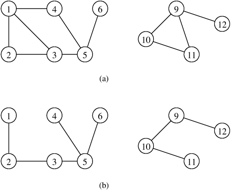

Connectivity¶
A graph’s connectivity gives information, without searching through the graph, on whether two vertices are joined by a path.
An undirected graph is connected if for any pairs of distinct vertices in the graph, a path exists between these two vertices.
A directed graph is strongly connected if for any pairs of distinct vertices in the graph, a directed path exists between these two vertices.
Four connected graphs
{kind=link}
Connected Components¶
A connected component of an undirected graph is a maximal connected subgraph, which isn’t included in an other connected subgraph.
A strongly connected component of an directed graph is a maximal strongly connected subgraph, which isn’t includes in an other strongly connected subgraph.
Edge and Vertex Connectivity¶
Vertex Connectivity is the minimal number of vertices to remove for a (strongly) connected graph to become disconnected.
Edge Connectivity is the minimal number of edges to remove for a (strongly) connected graph to become disconnected.